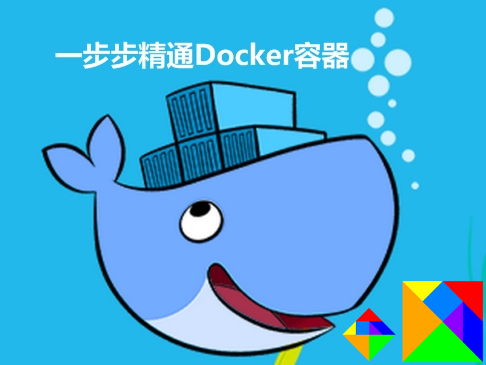
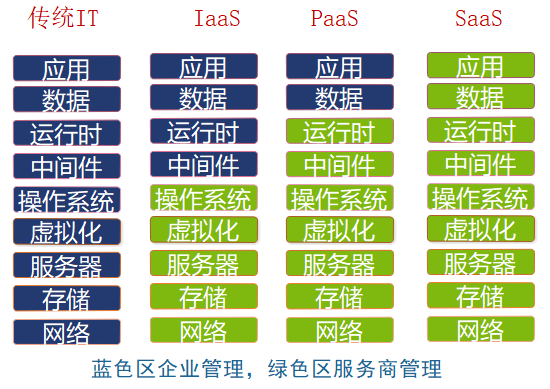
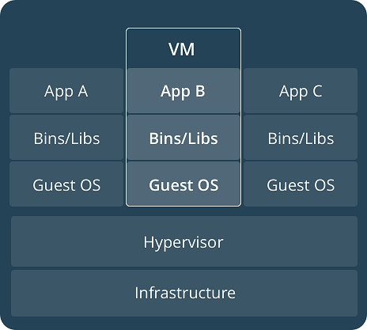
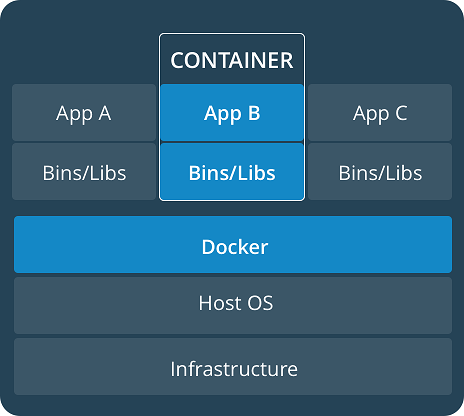

一步步精通Docker容器实战
Table of Contents
- 1. Docker简介
- 2. CentOS7安装和基本使用
- 3. Docker CE安装
- 4. Docker特点
- 5. Docker结构和组成
- 5.1. 结构和组成
- 5.2. 指令
- 5.3. 镜像
- 5.3.1. Parser directives
- 5.3.2. escape
- 5.3.3. ENV
- 5.3.4. .dockerignore
- 5.3.5. FROM
- 5.3.6. RUN
- 5.3.7. CMD
- 5.3.8. LABEL
- 5.3.9. EXPOSE
- 5.3.10. ENV
- 5.3.11. ADD
- 5.3.12. COPY
- 5.3.13. ENTRYPOINT
- 5.3.14. VOLUME
- 5.3.15. USER
- 5.3.16. WORKDIR
- 5.3.17. ARG
- 5.3.18. ONBUILD
- 5.3.19. STOPSIGNAL
- 5.3.20. HEALTHCHECK
- 5.3.21. SHELL
- 5.3.22. Dockerfile examples
- 5.3.23. 参考镜像
- 5.3.24. Dockerfile最佳实践
- 5.4. 容器
- 5.5. 仓库
- 6. 远程连接daemon
1 Docker简介

2 CentOS7安装和基本使用
2.1 虚拟机中安装CentOS7
2.2 备份安装镜像和通过VMware制作快照
2.3 Windows下远程连接CentOS7
2.4 Linux下远程连接CentOS7
ssh root@192.168.1.105 #输入密码 #切换到root用户 su root #输入root密码 #退出root账户进入user账户 exit #再输入exit断开远程连接
3 Docker CE安装
3.1 Docker CE
$ sudo yum install -y yum-utils
$ sudo yum-config-manager \
--add-repo \
https://download.docker.com/linux/centos/docker-ce.repo
#$ sudo yum-config-manager --enable docker-ce-edge
#禁用
$ sudo yum-config-manager --disable docker-ce-edge
$ sudo yum makecache fast
$ sudo yum install docker-ce
#$ sudo yum install docker-ce-<VERSION>
#$ yum list docker-ce.x86_64 --showduplicates |sort -r docker-ce.x86_64 17.03.0.el7 docker-ce-stable
$ sudo systemctl start docker
$ sudo docker run hello-world
4 Docker特点

1.更快速的交付和部署
2.更高效的虚拟化
3.更轻松的迁移和扩展
4.更简单的管理
4.1 虚拟化技术比较
容器相比虚拟机更轻量
4.1.1 虚拟机

4.1.2 容器

5 Docker结构和组成
5.1 结构和组成


客户端服务端模式可单机可分布式部署
服务端负责docker镜像的构建，运行，发布.
5.1.1 The Docker daemon
接收Docker API请求和管理docker的对象例如镜像、容器、网络、存储卷等，
也可以和其他的Docker daemon通信管理docker的service
5.1.2 The Docker client
可以和多个daemon进行通信，发送指令给daemon, 用户和daemon交互主要方式。
5.1.3 Docker registries
存储docker镜像,Docker Cloud是一个公共仓库,是docker默认的仓库。
可以搭建私有仓库。
docker Cloud有docker可信仓库。
拉取，推送镜像到设定仓库。
Docker store允许用户购买和出售自己的镜像，也可以免费发布自己的镜像。
5.1.4 Docker objects
在使用docker的时候，将会涉及到创建、使用镜像、容器、网络、卷、插件或者其他的对象。
5.2 指令
Management Commands:
container Manage containers
image Manage images
network Manage networks
node Manage Swarm nodes
plugin Manage plugins
secret Manage Docker secrets
service Manage services
stack Manage Docker stacks
swarm Manage Swarm
system Manage Docker
volume Manage volumes
Commands:
attach Attach to a running container
build Build an image from a Dockerfile
commit Create a new image from a container's changes, docker commit -m='A new image' --author='vker' 614122c0aabb vker/bvok
cp Copy files/folders between a container and the local filesystem 使用符号:区分源和目标
create Create a new container
diff Inspect changes to files or directories on a container's filesystem
events Get real time events from the server
exec Run a command in a running container
export Export a container's filesystem as a tar archive
history Show the history of an image
images List images
import Import the contents from a tarball to create a filesystem image
info Display system-wide information
inspect Return low-level information on Docker objects
kill Kill one or more running containers
load Load an image from a tar archive or STDIN
login Log in to a Docker registry
logout Log out from a Docker registry
logs Fetch the logs of a container
pause Pause all processes within one or more containers
port List port mappings or a specific mapping for the container
ps List containers
pull Pull an image or a repository from a registry
push Push an image or a repository to a registry
rename Rename a container
restart Restart one or more containers
rm Remove one or more containers docker rm $(docker ps -a -q)
rmi Remove one or more images docker rmi $(docker images -q)，docker rmi $(docker images | grep "^<none>" | awk "{print $3}")
run Run a command in a new container
save Save one or more images to a tar archive (streamed to STDOUT by default)
search Search the Docker Hub for images
start Start one or more stopped containers
stats Display a live stream of container(s) resource usage statistics
stop Stop one or more running containers
tag Create a tag TARGET_IMAGE that refers to SOURCE_IMAGE
top Display the running processes of a container
unpause Unpause all processes within one or more containers
update Update configuration of one or more containers
version Show the Docker version information
wait Block until one or more containers stop, then print their exit codes

[root@localhost user]# docker info Containers: 0 Running: 0 Paused: 0 Stopped: 0 Images: 2 Server Version: 17.03.1-ce Storage Driver: overlay Backing Filesystem: xfs Supports d_type: false Logging Driver: json-file Cgroup Driver: cgroupfs Plugins: Volume: local Network: bridge host macvlan null overlay Swarm: inactive Runtimes: runc Default Runtime: runc Init Binary: docker-init containerd version: 4ab9917febca54791c5f071a9d1f404867857fcc runc version: 54296cf40ad8143b62dbcaa1d90e520a2136ddfe init version: 949e6fa Security Options: seccomp Profile: default Kernel Version: 3.10.0-327.el7.x86_64 Operating System: CentOS Linux 7 (Core) OSType: linux Architecture: x86_64 CPUs: 2 Total Memory: 3.688 GiB Name: localhost.localdomain ID: SA42:IFVV:F4SK:QLB6:PDW2:3QBQ:SRUF:ZZMN:TE4T:62XY:OFXB:I43I Docker Root Dir: /var/lib/docker Debug Mode (client): false Debug Mode (server): false Username: bvok Registry: https://index.docker.io/v1/ WARNING: bridge-nf-call-iptables is disabled WARNING: bridge-nf-call-ip6tables is disabled Experimental: false Insecure Registries: 127.0.0.0/8 Live Restore Enabled: false [root@localhost user]#
[root@localhost lib]# pwd
/var/lib
[root@localhost lib]# tree docker -L 4
docker
├── containers
├── image
│ └── overlay
│ ├── distribution
│ │ ├── diffid-by-digest
│ │ └── v2metadata-by-diffid
│ ├── imagedb
│ │ ├── content
│ │ └── metadata
│ ├── layerdb
│ │ ├── mounts
│ │ ├── sha256
│ │ └── tmp
│ └── repositories.json
├── network
│ └── files
│ └── local-kv.db
├── overlay
│ ├── 9c624a3534090b0ef2c78352487c2d35e238ac00e674015124f50092bb1f512c
│ │ └── root
│ │ ├── bin
│ │ ├── dev
│ │ ├── etc
│ │ ├── home
│ │ ├── root
│ │ ├── tmp
│ │ ├── usr
│ │ └── var
│ ├── b06d7c2247c2d8327c1154536527022b5c882d9e2281decf13923718e8099205
│ │ └── root
│ │ ├── bin
│ │ ├── dev
│ │ ├── etc
│ │ ├── home
│ │ ├── root
│ │ ├── tmp
│ │ ├── usr
│ │ └── var
│ └── b2ccaa0fb436955c68d344848036c4407481c276a66501f9b5531164eefbac46
│ └── root
│ ├── bin
│ ├── dev
│ ├── etc
│ ├── home
│ ├── root
│ ├── tmp
│ ├── usr
│ └── var
├── plugins
│ ├── storage
│ │ └── blobs
│ │ └── tmp
│ └── tmp
├── swarm
├── tmp
├── trust
└── volumes
└── metadata.db
55 directories, 3 files
[root@localhost lib]#
5.3 镜像
一般基于其他镜像，并添加自定义部分，分层构建，保留历史，构建每层结束的时候，不需要的清除，不包括动态数据。
不是整体打包的内容，而是一层层组成的。可以理解为用来创建容器的只读模板。
[root@localhost docker]# docker images REPOSITORY TAG IMAGE ID CREATED SIZE vker/websv 0.1 57ce173fc558 2 days ago 7.22 MB busybox latest 54511612f1c4 2 weeks ago 1.13 MB [root@localhost docker]# docker ps -a CONTAINER ID IMAGE COMMAND CREATED STATUS PORTS NAMES 08135140ff81 vker/websv:0.1 "sh" 39 seconds ago Exited (0) 12 seconds ago websv1 [root@localhost docker]# tree -L 4 ...... [root@localhost docker]#
[root@localhost overlay]# docker images REPOSITORY TAG IMAGE ID CREATED SIZE vker/websv 0.1 57ce173fc558 2 days ago 7.22 MB busybox latest 54511612f1c4 2 weeks ago 1.13 MB [root@localhost overlay]# pwd /var/lib/docker/image/overlay [root@localhost overlay]# tree -L 4 ...... [root@localhost overlay]#
演示
自己可以创建镜像和发布镜像，或者使用第三方发布到仓库的镜像，
自己创造镜像需要使用规定的语法编写Dockerfile文件然后执行构建，每个执行命令都会创建一层。
如果修改了Dockerfile并重新构建镜像，只有被修改的层才会被重新构建，这样构建很快，轻量，小型。
Dockerfile
PATH URL
-f指定路径
可多次-t构建多个
.dockerignore
注意上下文路径
层层构建并提交，自动清理。RUN cd /tmp 不会构建
cache和本地本地父链有关。
INSTRUCTION arguments
FROM RUN CMD LABEL EXPOSE ENV ADD COPY ENTRYPOINT VOLUME USER WORKDIR ARG ONBUILD STOPSIGNAL HEALTHCHECK SHELL
golang web源码
package main
import (
"fmt"
"net/http"
"log"
"time"
"os"
)
func hello(w http.ResponseWriter, r *http.Request) {
host, err := os.Hostname()
if err != nil {
fmt.Printf("%s", err)
} else {
fmt.Fprintf(w, time.Now().Format("2006-01-02 15:04:05 -0700"))
fmt.Fprintf(w,"\n")
fmt.Fprintf(w, host)
}
fmt.Println()
}
func main() {
http.HandleFunc("/", hello) //设置访问的路由
err := http.ListenAndServe("0.0.0.0:8080", nil) //设置监听的端口
if err != nil {
log.Fatal("ListenAndServe: ", err)
}
}
5.3.1 Parser directives
#directive=value # directive =value # directive= value # directive = value # dIrEcTiVe=value
5.3.2 escape
# escape=\ (backslash)
5.3.3 ENV
ADD COPY ENV EXPOSE FROM LABEL STOPSIGNAL USER VOLUME WORKDIR ONBUILD组合
5.3.4 .dockerignore
# comment */temp* */*/temp* temp?
*.md !README.md
*.md !README*.md README-secret.md
*.md README-secret.md !README*.md
5.3.5 FROM
FROM <image> [AS <name>] FROM <image>[:<tag>] [AS <name>] FROM <image>[@<digest>] [AS <name>]
ARG是唯一一个可用于FROM前的指令
ARG CODE_VERSION=latest
FROM base:${CODE_VERSION}
CMD /code/run-app
FROM extras:${CODE_VERSION}
CMD /code/run-extras
ARG VERSION=latest FROM busybox:$VERSION ARG VERSION RUN echo $VERSION > image_version
5.3.6 RUN
RUN <command> (shell form, the command is run in a shell, which by default is /bin/sh -c on Linux or cmd /S /C on Windows) RUN ["executable", "param1", "param2"] (exec form) #exec形式会作为json数组进行解析，需要符号"而不是' #shell形式，环境变量会起作用(解释环境变量) #exec的shell执行，环境变量起作用 #其他遵循exec shell形式的指令依然遵循。
shell形式，\（反斜杠）将单个RUN指令继续到下一行。
RUN /bin/bash -c 'source $HOME/.bashrc; \ echo $HOME' #功能同下边 RUN /bin/bash -c 'source $HOME/.bashrc; echo $HOME' #选不同的shell RUN ["/bin/bash", "-c", "echo hello"] # exec 格式是json 所以用"符号 不要使用单引号' RUN [ "echo", "$HOME" ] #shell不执行，HOME不被替换 RUN [ "sh", "-c", "echo $HOME" ] #RUN ["c:\windows\system32\tasklist.exe"] 转义 ["c:\\windows\\system32\\tasklist.exe"] #缓存起作用，禁用缓存docker build --no-cache RUN apt-get dist-upgrade -y
5.3.7 CMD
CMD ["executable","param1","param2"] (exec form, this is the preferred form) CMD ["param1","param2"] (as default parameters to ENTRYPOINT) CMD command param1 param2 (shell form)
一个Dockerfile仅仅最后一个CMD起作用
为执行容器提供缺省值，执行文件或者没有执行文件(ENTRYPOINT提供)
如果CMD配合ENTRYPOINT那么他们的格式都需要是json数组格式，CMD用来提供参数。
CMD非参数模式，shell exec 当运行一个镜像的时候会执行。
shell格式 相当于指令在/bin/sh -c执行，如果不想使用shell格式，就需要使用数组格式，参数为单独字符串
FROM ubuntu CMD echo "This is a test." | wc -
FROM ubuntu #需要程序地址 CMD ["/usr/bin/wc","--help"]
如果容器每次都执行则考虑CMD和ENTRYPOINT结合
docker run覆盖CMD
RUN镜像构建，并提交交结果。CMD构建阶段不执行，提供了镜像预期指令。
5.3.8 LABEL
LABEL <key>=<value> <key>=<value> <key>=<value> ...
#一个LABEL指令一层，尽量合并为一个指令，同名覆盖 LABEL "com.example.vendor"="ACME Incorporated" LABEL com.example.label-with-value="foo" LABEL version="1.0" LABEL description="This text illustrates \ that label-values can span multiple lines." LABEL maintainer="SvenDowideit@home.org.au"
docker inspect查看images的LABEL
"Labels": {
"com.example.vendor": "ACME Incorporated"
"com.example.label-with-value": "foo",
"version": "1.0",
"description": "This text illustrates that label-values can span multiple lines.",
"multi.label1": "value1",
"multi.label2": "value2",
"other": "value3"
},
5.3.9 EXPOSE
EXPOSE <port> [<port>/<protocol>...]
容器监听的端口，可以指定TCP或UDP，默认是TCP，并没有发布该端口。
它作为构建映像的人和运行容器的人之间的一种文档类型。
发布该端口，-p标志来发布和映射一个或多个端口。
如果容器间设置EXPOSE和公开端口通信，可以参考docker network
5.3.10 ENV
#第一个空格后为值 ENV <key> <value> #可以 ENV <key>=<value> ...
ENV myName="John Doe" myDog=Rex\ The\ Dog \
myCat=fluffy
ENV myName John Doe ENV myDog Rex The Dog ENV myCat fluffy
结果相同，但是第一个只有一层
docker run --env <key>=<value>
指令一次性
RUN <key>=<value> <command>
5.3.11 ADD
ADD <src>... <dest> ADD ["<src>",... "<dest>"] (this form is required for paths containing whitespace)
src 文件 路径 URL
dest 绝对路基或者OWRKDIR的相对路径
Dockerfile源码 支持Go’s filepath.Match规则
ADD hom* /mydir/ # adds all files starting with "hom" ADD hom?.txt /mydir/ # ? is replaced with any single character, e.g., "home.txt"
ADD test relativeDir/ # adds "test" to `WORKDIR`/relativeDir/ ADD test /absoluteDir/ # adds "test" to /absoluteDir/ ADD arr[[]0].txt /mydir/ # copy a file named "arr[0].txt" to /mydir/
STDIN
docker build - < somefile docker build - <archive.tar.gz
带有身份验证 可以使用RUN wget,RUN curl或容器的其他工具来下载，ADD不支持身份认证。
ADD后续缓存无效
ADD遵守以下规则
identity, gzip, bzip2 or xz会解压，依据内容不依据后缀。
URL不解压。
dest最好是带/明确为目录，防止混淆。
5.3.12 COPY
COPY <src>... <dest> COPY ["<src>",... "<dest>"] (this form is required for paths containing whitespace) #样例 COPY hom* /mydir/ # adds all files starting with "hom" COPY hom?.txt /mydir/ # ? is replaced with any single character, e.g., "home.txt" #样例 COPY test relativeDir/ # adds "test" to `WORKDIR`/relativeDir/ COPY test /absoluteDir/ # adds "test" to /absoluteDir/ #转义 COPY arr[[]0].txt /mydir/ # copy a file named "arr[0].txt" to /mydir/
5.3.13 ENTRYPOINT
ENTRYPOINT ["executable", "param1", "param2"] (exec form, preferred) ENTRYPOINT command param1 param2 (shell form)
PID 程序运行的临时唯一标识，可收回。
容器功能表现得像一个可执行程序一样。
ENTRYPOINT ["/bin/echo"] docker run -it imageecho "this is a test"
docker run <image>的命令行参数将附跟在exec形式的ENTRYPOINT中的所有元素之后，并将覆盖使用CMD指定的所有元素。
使用docker run –entrypoint标志覆盖ENTRYPOINT指令,只能使用exec格式(no sh -c will be used)。
ENTRYPOINT shell形式屏蔽CMD的参数和run后的命令但是会作为"/bin/sh -c"的子进程，不是PID 1，无法接收信号，例如无法接收到docker stop
镜像中最后一个ENTRYPOINT指令起作用。
ENTRYPOINT exec top -b
去掉exec将无法使用docker stop退出
Dockerfile应该至少指定一个CMD或ENTRYPOINT命令。
当使用容器作为可执行文件时，应该定义ENTRYPOINT。
CMD应该用作定义ENTRYPOINT命令的默认参数或在容器中执行ad-hoc命令的一种方法。
当运行带有替代参数的容器时，CMD将被覆盖。
| No ENTRYPOINT | ENTRYPOINT exec_entry p1_entry | ENTRYPOINT [“exec_entry”, “p1_entry”] | |
|---|---|---|---|
| No CMD | error, not allowed | /bin/sh -c exec_entry p1_entry | exec_entry p1_entry |
| CMD [“exec_cmd”, “p1_cmd”] | exec_cmd p1_cmd | /bin/sh -c exec_entry p1_entry | exec_entry p1_entry exec_cmd p1_cmd |
| CMD [“p1_cmd”, “p2_cmd”] | p1_cmd p2_cmd | /bin/sh -c exec_entry p1_entry | exec_entry p1_entry p1_cmd p2_cmd |
| CMD exec_cmd p1_cmd | /bin/sh -c exec_cmd p1_cmd | /bin/sh -c exec_entry p1_entry | exec_entry p1_entry /bin/sh -c exec_cmd p1_cmd |
5.3.14 VOLUME
VOLUME ["/data"] VOLUME /var/log VOLUME /var/log /var/db
如果任何构建步骤在声明后更改卷中的数据，那么这些更改将被丢弃。
5.3.15 USER
USER <user>[:<group>] or USER <UID>[:<GID>]
5.3.16 WORKDIR
WORKDIR /path/to/workdir
5.3.17 ARG
ARG <name>[=<default value>]
docker build传递ARG值–build-arg <varname>=<value> 如果没有在Dockerfile中定义就报错。
可以有默认值，构建的时候没有传递则使用默认值。
不建议使用build-time变量来传递诸如github密钥，用户凭证等密码。构建时变量值使用docker history命令对图像的任何用户可见。
Docker有一组预定义的ARG变量。
HTTP_PROXY http_proxy HTTPS_PROXY https_proxy FTP_PROXY ftp_proxy NO_PROXY no_proxy
FROM ubuntu
ARG CONT_IMG_VER
ENV CONT_IMG_VER v1.0.0
RUN echo $CONT_IMG_VER
#Then, assume this image is built with this command:
$ docker build --build-arg CONT_IMG_VER=v2.0.1 .
FROM ubuntu
ARG CONT_IMG_VER
ENV CONT_IMG_VER ${CONT_IMG_VER:-v1.0.0}
RUN echo $CONT_IMG_VER
$ docker build .
对缓存构建有影响，ARG和ENV的区别。
5.3.18 ONBUILD
ONBUILD [INSTRUCTION]
指令在image被用作另一个构建的基础时,向image添加要在以后执行的*trigger*指令。
trigger将在下游构建的上下文中执行，就好像它已经在下游Dockerfile中的FROM指令之后立即插入。
任何构建指令都可以注册为trigger。
5.3.19 STOPSIGNAL
STOPSIGNAL signal
5.3.20 HEALTHCHECK
HEALTHCHECK [OPTIONS] CMD command (check container health by running a command inside the container) HEALTHCHECK NONE (disable any healthcheck inherited from the base image) --interval=DURATION (default: 30s) --timeout=DURATION (default: 30s) --start-period=DURATION (default: 0s) --retries=N (default: 3) HEALTHCHECK --interval=5m --timeout=3s \ CMD curl -f http://localhost/ || exit 1
5.3.21 SHELL
SHELL ["executable", "parameters"] #The default shell on Linux is ["/bin/sh", "-c"], and on Windows is ["cmd", "/S", "/C"]
5.3.22 Dockerfile examples
#在Dockerfile中，#开头的被认作是注释； # Use an official alpine runtime as a parent image ##FROM centos:latest FROM alpine:latest #FROM scratch # Set the working directory to /app WORKDIR /home/vker # Copy the current directory contents into the container at ADD ./vker/ /home/vker # Run # RUN echo "run vker" >> ./server_log # Make port 8080 available to the world outside this container EXPOSE 8080 # Define environment variable ENV NAME vker # Run hello when the container launches # CMD ["/hello"]
构建
[root@localhost app]# docker build -t vker/websvbase:0.1 . ...... [root@localhost app]# cat Dockerfile ......
[root@localhost app]# docker images REPOSITORY TAG IMAGE ID CREATED SIZE vker/websvbase 0.1 4b8ff495d4c5 11 minutes ago 6.09 MB vker/websv 0.1 57ce173fc558 2 days ago 7.22 MB busybox latest 54511612f1c4 2 weeks ago 1.13 MB [root@localhost app]# docker inspect 4b ......
修改Dockerfile后再进行构建
[root@localhost app]# docker build -t vker/websvbase:0.2 . ......
演示构建简单镜像并留作业
5.3.23 参考镜像
scratch:一个空镜像，特别是用于“从头开始”构建镜像。
busybox:小镜像，适合静态编译的不依赖操作系统环境的二进制程序，演示golang编译web程序并运行在busybox下。
busybox:uclibc (微 嵌入) busybox:glibc (GNU) busybox:musl(嵌入)
alpine:5M左右，带有软件安装功能的小镜像，很适合做为基础镜像。
clearlinux:针对intel架构优化，面向云端的linux系统。
练习alpine环境下运行golang web程序
5.3.24 Dockerfile最佳实践
.把维护者
.更新系统最好直接从上层镜像继承。
.使用标签管理Dockerfile。
.避免映射公共端口。
.使用类似array形式的CMD和ENTRYPOINT。
.使用.dockerignore文件排除构建镜像时不需要的文件或目录。
.避免安装不必要的软件包。
.每个容器都跑一个进程,解耦横向扩展和重用。
.最小化层,镜像是分层的结构，对于Dockerfile，可读性和最小化层平衡。
.多行参数排序,通过字母顺序来排序，添加一个空行使用\换行:
RUN apt-get update && apt-get install -y \ bzr \ cvs \ git \ mercurial \ subversion
.创建缓存
镜像构建Dockerfile顺序依次执行，每次指令会寻找镜像缓存复用,如果没有则创建新。
禁止缓存，docker build添加–no-cache=true选项。
ADD和COPY指令除外，执行ADD和COPY时存放到镜像的文件也是需要检查的，文件校验之后再在缓存中查找
，如果检测的文件改变则缓存失效。
RUN apt-get -y update命令只检查命令是否匹配，如果匹配就不会再执行更新了。
为了有效地利用缓存，你需要保持你的Dockerfile一致，并且尽量在末尾修改。
FROM: 只要可能就使用官方镜像库作为基础镜像
RUN: 可读性、可维护性，把长或者复杂的RUN语句使用\分隔符分成多行
标准写法
RUN apt-get update && apt-get install -y package-bar package-foo
CMD: 推荐使用CMD [“executable”, “param1”, “param2”…]数组这种格式，
CMD [“param”, “param”]则配合ENTRYPOINT使用
EXPOSE: Dockerfile 指定容器公开的端口，映射宿主机的端口尽量不通过Dockerfile.
ENV: 为了使新的软件更容易运行，可以使用ENV更新PATH变量。
如ENV PATH /usr/local/nginx/bin:$PATH确保CMD ["nginx"]即可运行
ENV也可以这样定义变量：
ENV PG_MAJOR 9.3 ENV PG_VERSION 9.3.4 RUN curl -SL http://example.com/postgres-$PG_VERSION.tar.xz | tar -xJC /usr/src/postgress && … ENV PATH /usr/local/postgres-$PG_MAJOR/bin:$PATH
ADD COPY:ADD比COPY多一些特性「tar 文件自动解包和支持远程 URL」，不推荐添加远程 URL
如不推荐这种方式:
ADD http://example.com/big.tar.xz /usr/src/things/ RUN tar -xJf /usr/src/things/big.tar.xz -C /usr/src/things RUN make -C /usr/src/things all
推荐使用 curl 或者 wget 替换，使用如下方式:
RUN mkdir -p /usr/src/things \
&& curl -SL http://example.com/big.tar.gz \
| tar -xJC /usr/src/things \
&& make -C /usr/src/things all
如果不需要添加 tar 文件，推荐使用COPY
5.4 容器
从镜像创建的运行实例，启动、开始、停止、删除，相当于一个完整的linux操作系统，相互隔离、保证安全，运行应用。
可以将一个容器接入多个网络，可以挂载存储，可以基于当前状态容器创建镜像。
容器运行->停止->删除 路径变化
[root@localhost docker]# tree -L 4 ...... [root@localhost docker]# ls containers image network overlay plugins swarm tmp trust volumes [root@localhost docker]# docker ps -a CONTAINER ID IMAGE COMMAND CREATED STATUS PORTS NAMES 08135140ff81 vker/websv:0.1 "sh" 34 minutes ago Up 28 minutes 0.0.0.0:8080->8080/tcp websv1 [root@localhost docker]# docker stop 08 08 [root@localhost docker]# [root@localhost docker]# docker ps -a CONTAINER ID IMAGE COMMAND CREATED STATUS PORTS NAMES 08135140ff81 vker/websv:0.1 "sh" 34 minutes ago Exited (137) 7 seconds ago websv1 [root@localhost docker]# tree -L 4 ...... [root@localhost docker]# docker rm 08 08 [root@localhost docker]# tree -L 4 ......
镜像是只读的，容器在启动的时候创建一层可写层作为最上层。
可以从一个镜像创建多个隔离的互不干扰的容器。
分配一个读写区作为最后一层。
网络默认直接使用NAT转换。
5.5 仓库
5.5.1 公有仓库
最大的公开仓库是Docker Hub
演示提交镜像到Docker Hub
国内Docker Hub仓库镜像服务器，同时也可以上传自己的镜像
5.5.2 私有仓库
docker容器的方式进行部署，客户端添加私有仓库地址。
192.168.1.109为客户端
192.168.1.110为服务端
6 远程连接daemon
192.168.1.109为客户端
192.168.1.110为服务端
配置文件位置/etc/docker/daemon.json
{
"authorization-plugins": [],
"data-root": "",
"dns": [],
"dns-opts": [],
"dns-search": [],
"exec-opts": [],
"exec-root": "",
"experimental": false,
"storage-driver": "",
"storage-opts": [],
"labels": [],
"live-restore": true,
"log-driver": "",
"log-opts": {},
"mtu": 0,
"pidfile": "",
"cluster-store": "",
"cluster-store-opts": {},
"cluster-advertise": "",
"max-concurrent-downloads": 3,
"max-concurrent-uploads": 5,
"default-shm-size": "64M",
"shutdown-timeout": 15,
"debug": true,
"hosts": [],
"log-level": "",
"tls": true,
"tlsverify": true,
"tlscacert": "",
"tlscert": "",
"tlskey": "",
"swarm-default-advertise-addr": "",
"api-cors-header": "",
"selinux-enabled": false,
"userns-remap": "",
"group": "",
"cgroup-parent": "",
"default-ulimits": {},
"init": false,
"init-path": "/usr/libexec/docker-init",
"ipv6": false,
"iptables": false,
"ip-forward": false,
"ip-masq": false,
"userland-proxy": false,
"userland-proxy-path": "/usr/libexec/docker-proxy",
"ip": "0.0.0.0",
"bridge": "",
"bip": "",
"fixed-cidr": "",
"fixed-cidr-v6": "",
"default-gateway": "",
"default-gateway-v6": "",
"icc": false,
"raw-logs": false,
"allow-nondistributable-artifacts": [],
"registry-mirrors": [],
"seccomp-profile": "",
"insecure-registries": [],
"disable-legacy-registry": false,
"no-new-privileges": false,
"default-runtime": "runc",
"oom-score-adjust": -500,
"runtimes": {
"runc": {
"path": "runc"
},
"custom": {
"path": "/usr/local/bin/my-runc-replacement",
"runtimeArgs": [
"--debug"
]
}
}
}
服务端配置内容
{
"hosts": ["unix:///var/run/docker.sock","192.168.1.110:2357"]
}
客户端连接方式
docker -H 192.168.1.110:2357 <cmd>